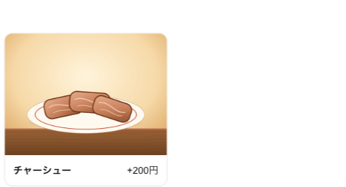
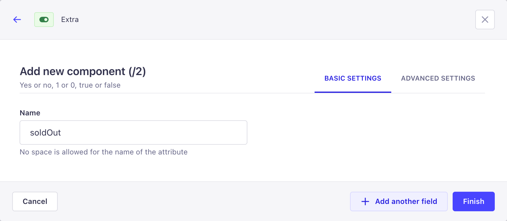
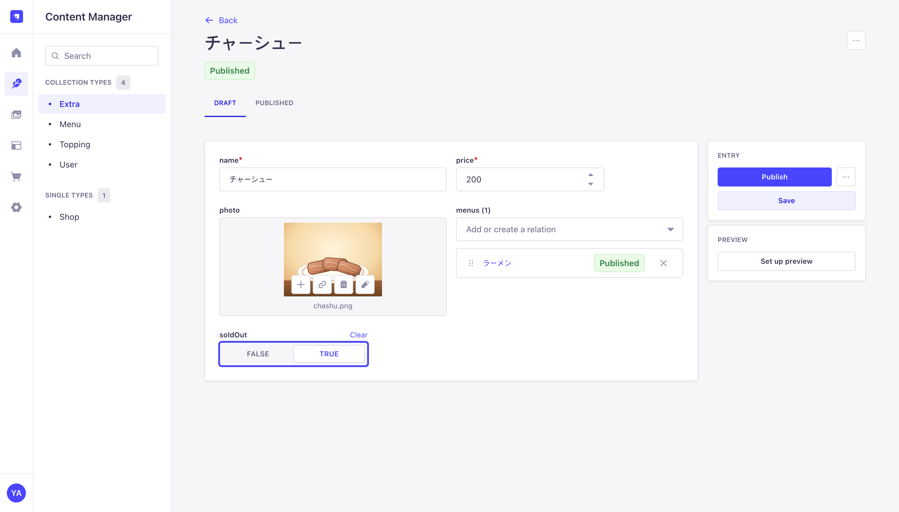
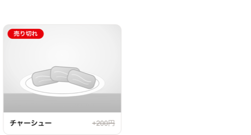

変更を本番まで: 小さな機能を1つ、最後まで送る
これまで作った流れを、最初から最後まで一度通してみます。ローカルで小さな機能を追加して PR をマージすれば、残りは自動で本番に反映されます。
追加メニューに「売り切れ」表示を追加し、ローカル → PR → マージ → 自動デプロイ → 本番の管理画面で ON にするまでを終える。
1. 何を変えるか
スタッフが管理画面で「売り切れ」を ON にすると、サイトの追加メニューが薄くなり「売り切れ」と表示されるようにします。

小さな変更ですが、3層すべてが登場します。
| 変わるもの | 層 | 誰が変えるか | 本番に行く方法 |
|---|---|---|---|
| スキーマ: Extra に soldOut(ON/OFF)フィールド | バックエンド | ローカルの管理画面 → Strapi がファイルに保存 | PR → マージ → 自動デプロイ |
| 型: 画面コードが soldOut を知る | フロント | 自動生成 | |
| 画面: 売り切れなら薄く + 「売り切れ」 | フロント | 人がコードで | |
| データ: 「チャーシューは売り切れ」 | DB | 本番の管理画面 | デプロイされない。本番で直接 |
2. 流れ
3. ローカル: フィールド追加 バックエンド
実行場所: リポジトリのルート
git switch -c feat/extra-sold-out
pnpm dev:db
pnpm dev:cmsContent-Type Builder → Extra → Add another field → Boolean。名前は soldOut、ADVANCED SETTINGS の Default value は false。Finish → Save。

Strapi が保存した設計図を見る 省略可
apps/cms/src/api/extra/content-types/extra/schema.json
"soldOut": {
"type": "boolean",
"default": false
}4. 画面修正 フロント
画面コードが新しいフィールドを知るよう、型を作り直します。pnpm gen:types を実行します(DB 起動中)。このリポジトリのように lefthook に gen-types を入れておけば、忘れてもコミット時に自動で作られます(この章の作業中に追加したもの、9節)。続けて追加メニューの部分を直します。以下はデザインを省いた要約で、実際のファイルは apps/web/src/app/page.tsx です。
{extras.map((extra) => (
<li>
<div className={extra.soldOut ? "薄く" : undefined}> // 売り切れなら写真を薄く
<Photo media={extra.photo} />
</div>
{extra.soldOut && <span>売り切れ</span>} // 売り切れのときだけ表示
<p>{extra.name} +{yen(extra.price)}</p>
</li>
))}データを取得するコードは直しません。追加メニューはすでにすべての文字・数値フィールドを受け取っているので、新しいフィールドもそのまま入ってきます。
生成された型が boolean | null になる理由 省略可
フィールドを追加する前に作ったデータは値が空です(null)。既定値 false は新しく作るデータにしか入りません。画面では null を「売り切れではない」として扱います。型を作り直さないまま extra.soldOut を使うと型検査が失敗するので、忘れても PR の CI が止めてくれます。
5. ローカルで確認
ローカルの管理画面のContent Manager → Extra → チャーシューで soldOut を TRUE にして Publish → http://localhost:3000 を再読み込みします(pnpm dev:web 実行中)。


6. コミット → PR → マージ
実行場所: リポジトリのルート(DB 起動中。コミット時に型生成が Strapi を一瞬起動する)
git add apps
git commit -m "feat: 追加メニューに「売り切れ」表示を追加"
git push -u origin feat/extra-sold-outコミット時に lefthook がコードの形を整え(gen-types を入れていれば型も生成)ます。GitHub で PR を作ると CI が4つ動き、すべて通過したら squash マージします。
7. 自動デプロイ CI/CD
マージすると06章のデプロイが自分で始まります。人がやることはありません。
| 段階 | 今回の変更で起きること |
|---|---|
| publish | web・cms のイメージを新しいコミット番号でビルド → 検査 → 保管庫(約5分) |
| deploy | DB など(Data)は変更がないのでそのまま。コンテナだけ新しいイメージに切り替え(約5分) |
| ECS | 新しいコンテナが立ち上がってから古いものを落とす(無停止)。cms は起動時に新しいスキーマを見て、本番 DB に soldOut 列を追加 |
デプロイ直後、本番サイトは何も変わっていないように見えます。本番 DB の既存データには売り切れの値が空だからです。
8. 本番で ON にする DB
本番の管理画面(06章の AdminUrl)で、ローカルと同じ操作をします: Content Manager → Extra → チャーシュー → soldOut TRUE → Publish。本番サイトを再読み込みすると、1節の「変更後」の画面になります。売り切れが解消したら FALSE に戻せばよく、これはデプロイなしですぐ反映されます。
9. コミット
feat: 追加メニューに「売り切れ」表示を追加この章の作業中に「型生成を忘れやすい」とわかったので、コミット時に自動で作られるよう lefthook を直しました(05章4節の gen-types)。
chore: スキーマを変えたコミットでは型の再生成(gen:types)を自動で行う